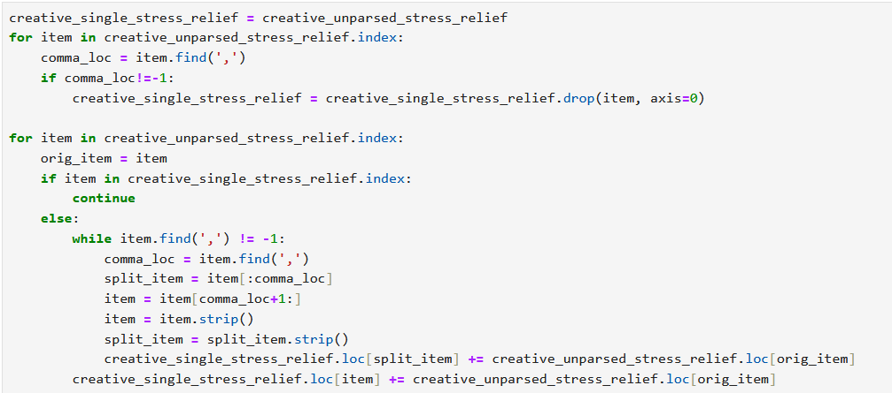

Data gathered from the Healthy Minds Study and analyzed by Lipson et. al found that as of 2021, more than 60% of students met the criteria for one or more mental health problems, an increase of 50% from 2013. With this negative trend, it is more important than ever to find ways to improve student mental health. With a better understanding of what types of students struggle the most with mental illness, it may be easier to develop programs to support those most in need. This analysis aims to see how other factors outside of predetermined demographic information impact student mental health. Are students engaging in sports less likely to feel depressed? Do students living on campus feel less isolated? How does academic year affect anxiety? These are the types of questions this analysis seeks to answer.
The dataset used for this analysis was a dataset titled “Student Mental Health Survey” sourced from Kaggle. The data was “gathered via electronic surveys distributed to IT students” and includes multiple measurements of mental health and wellness. Features with a potential impact on mental health include gender, age, university, type of degree, major, GPA, residential status, campus discrimination, engagement with sports, average sleep, and stress relief activities. Minimal general pre-processing was required. The dataset described itself as cleaned, and a review confirmed that there were no anomalies or missing information in the data.
Pre-processing for the individual graphs was largely in two steps: collating the data into groups based on responses, and averaging their mental health responses. The sum of unique values was used to find the average respondent score.
Pre-processing for the analysis of stress relief activities required additional work. Each entry containing more than one stress relief activity was searched and split on commas to identify which stress relief activities were included in the list. The numeric values of each entry were then added to the entry collecting all instances of one stress relief activity, including their counts. As such, any entry containing more than one activity was counted multiple times to show the average for each different activity.
One interesting correlation was between the average number of times students engaged with sports per week and their reported anxiety, depression, and isolation.

Isolation and depression decrease both in the increase from no sports engagement to one to three instances of sports engagement per week and from one to three instances of sports engagement per week to four to six instances of sports engagement per week, while anxiety remains steady between no sports engagement and one to three instances of sports engagement per week, decreasing at four to six instances of sports engagement per week. This would suggest that the more often a student engages in sports, the less depressed, anxious, and isolated they would feel.
The increase in reported depression, anxiety, and isolation at seven or more times engaging with sports per week from four to six times engaging with sports per week suggests more to the relationship between sports and mental health. One possible explanation for this could be that students engaging in sports seven or more times per week are more likely to be students specifically involved in competitive college athletics. These students may experience more stress related to their athletic activities in comparison to students participating in club or intramural sports who may participate for fun or health instead of a scholarship or potential career.
There was a substantial correlation between the academic year of students and their reported anxiety, depression, and isolation.
On average, students felt the least depressed, anxious, and isolated during their second academic year. They felt worse during their first academic year, reported similar levels of isolation, anxiety, and depression during their third year, and felt the most depressed, isolated, and anxious during their fourth year.
The higher levels of depression, anxiety, and isolation in a student's first year can be attributed to the new environment, schedule, and stressors that come with their first year of college. The higher reported levels in the fourth year have similar possible explanations. The final year of a college degree may bring a special project that requires additional time beyond traditional courses, restricting time for stress relief; students may be focusing on their final courses before graduation, reducing time for non-academic activities; or students may be worried about their plans after graduation, whether they are looking for or preparing to look for a job or attempting to get into a post-graduate program.
The difference in reported depression, anxiety, and isolation between students living on-campus and off-campus is minor but worth noting.
While average reported depression is similar between students living on- and off-campus, the average reported isolation and anxiety is lower in students living on-campus. While the small scale of the data makes it hard to determine, only about one quarter of the respondents living on campus, the decrease in isolation and anxiety could potentially be due to students living on campus having easier access to campus resources and being closer to activities and student life that make it easier for students to engage with other students and feel less isolated. This indicates that requiring on-campus housing for first-year students is likely to have a positive effect on their well-being.
The different ways students sought relief from stress may be related to their overall mental wellness.
Excluding “nothing”, which only one respondent selected, the stress relief activity correlated with highest levels of depression, anxiety, and isolation was “creative outlets.” The stress relief activity correlated with the lowest levels of depression, anxiety, and isolation is “social connections”, with no averages reaching 3.0. This is a reasonable correlation, as it makes sense that relieving stress through social connections would result in feeling less isolated. Additionally, depression and anxiety can make socializing more difficult, so students experiencing higher levels of depression and anxiety may be less likely to seek stress relief through social connections.
The second-highest levels of depression and isolation being associated with “sports and fitness” is an unexpected result, given that involvement with sports was earlier correlated with less anxiety and depression. The stress relief activity correlated with the second-lowest levels of depression, anxiety, and isolation is “outdoor activities”, a probable result on its own but more interesting when combined with the high depression, anxiety, and isolation reported by students who used “sports and fitness” as a stress relief activity. It could be that students who fell into the 7+ sports engagements per week category are more likely to select “sports and fitness” as a stress relief activity than “outdoor activities” and as such report their higher levels of distress, or that non-sport outdoor activities are less stressful and thus better at reducing anxiety. Without more information on what students considered “sports and fitness” versus “outdoor activities”, it is difficult to draw more certain conclusions.
There is more good than harm to be done with this data. Understanding which students need additional support to be healthy and successful students can allow institutions to create programs to specifically aid students who are more likely to be struggling or to adjust existing programs to help more students. Knowing that students in their last years of college may be experiencing more stress could help lead to targeted aid campaigns to encourage the students to seek help when they need it. While the information on stress relief activities may not be immediately actionable, knowing what activities are most likely to help students' mental health may inform better event planning in the future.
One potential harm from this data is the potential for this information to be used as an excuse to ignore certain student populations who appear to be doing better in relation to their peers, or to think the student mental health crisis is not as bad as it seems. As these numbers are averages, they could be interpreted as the most common number instead of the middle ground between students doing well and students struggling.
This data is also limited. There were only 88 clean responses to the survey; there were only four majors listed, all of which being information technology majors and two of which having less than ten responses each; and multiple features not analyzed in this data were spread unevenly in similar ways. This may help the assessed colleges' IT programs find which student programs to give additional support to, but any further decisions would require additional research.